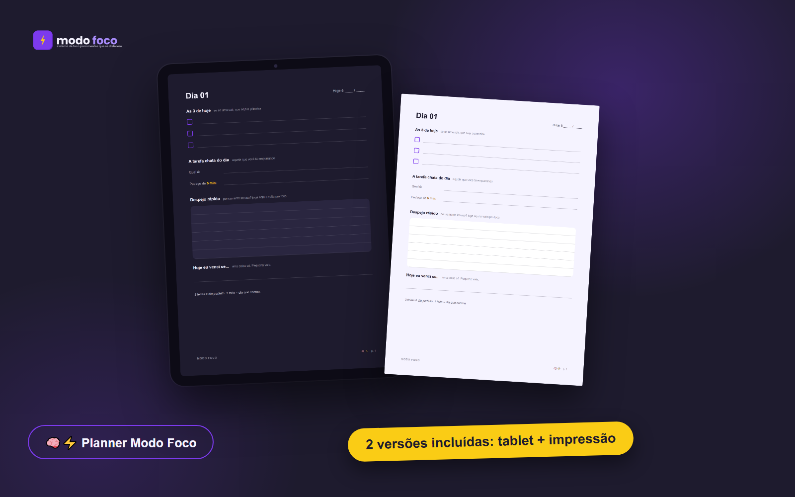
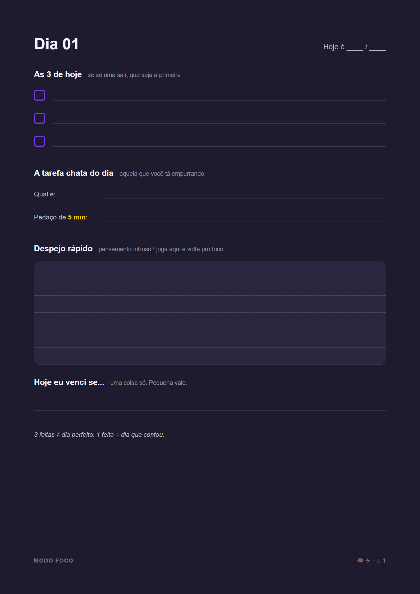
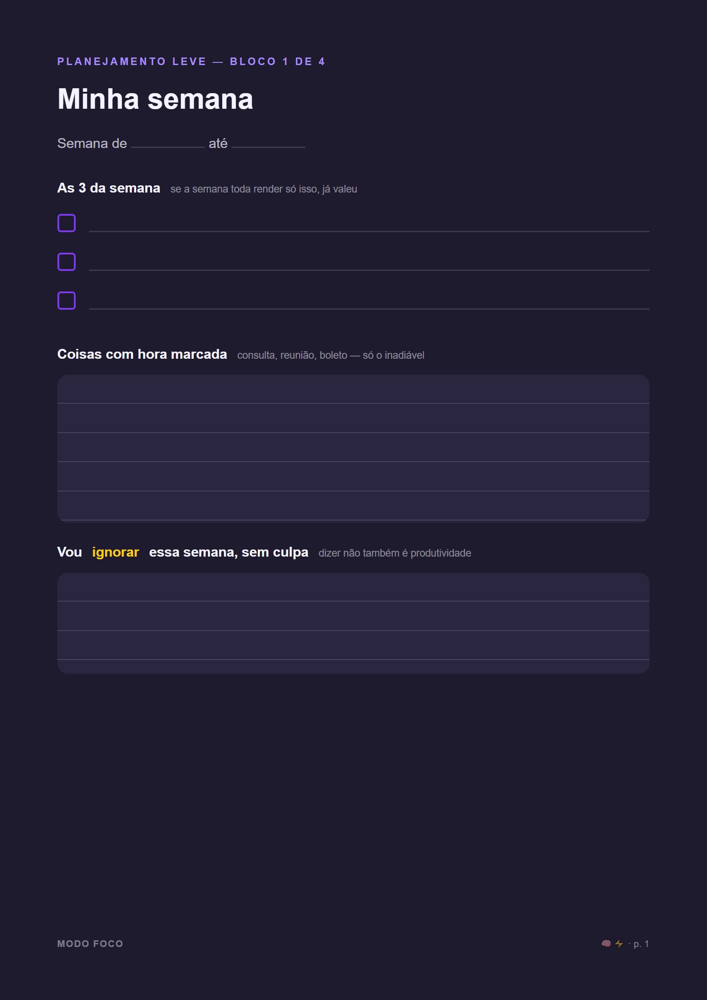
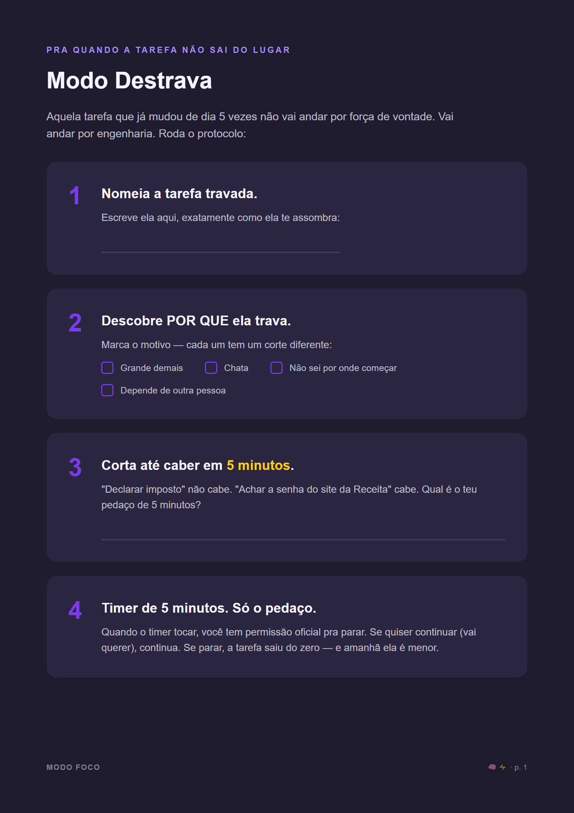
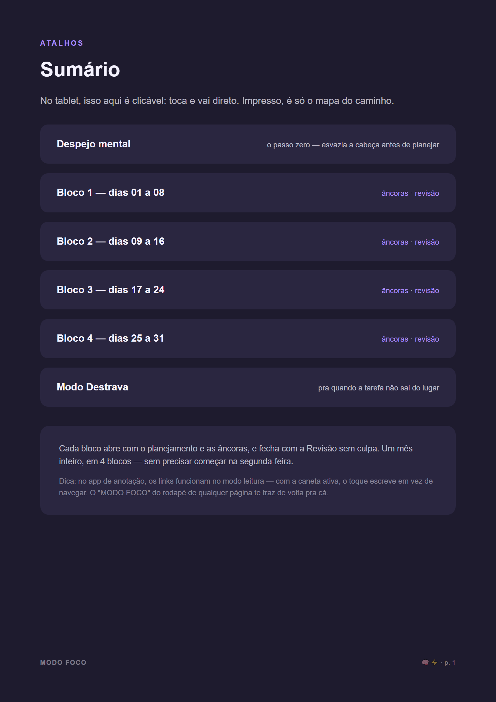

Você não é preguiçosa. Você tem 47 abas abertas na cabeça. O Modo Foco é o planner que organiza o dia em 3 tarefas, dá um lugar pro caos da mente e te ajuda a começar a tarefa chata sem sofrer.

Planner comum é feito pra gente que já é organizada: 40 hábitos pra rastrear, rotina milagrosa das 5h da manhã, blocos de hora em hora que desmoronam no primeiro imprevisto.
Aí você atrasa um dia, a página fica em branco te encarando, a culpa bate — e o planner vai pra gaveta junto com os outros.
O Modo Foco parte do princípio contrário: um sistema que funciona COM o teu cérebro distraído, não contra ele. Menos coisas pra preencher, recomeço limpo toda semana, e um protocolo específico pra hora em que você trava.

As 3 que importam — mais um espaço separado pra aquela tarefa chata que você vem empurrando, e um despejo de mente pra tirar o barulho da cabeça e botar no papel. Preencher leva 4 minutos, até em dia caótico.

O mês vem dividido em 4 blocos de ~1 semana. Cada bloco abre com planejamento leve e fecha com revisão SEM CULPA. Abandonou no meio? O bloco novo é um recomeço limpo — não uma página em branco te julgando.

Travou numa tarefa? Você marca o motivo do travamento e segue um passo a passo pra começar em 5 minutos. É a parte que nenhum planner comum tem — porque planner comum finge que travar não existe.

No tablet, tudo é linkado: o sumário leva pra qualquer página e todo rodapé volta pro sumário. Nada de arrastar 50 páginas procurando onde parou (sim, os concorrentes fazem você fazer isso).
Versão tablet (dark, com links clicáveis) + versão impressão (clara, econômica de tinta). 50 páginas: 31 diárias em 4 blocos, planejamento, âncoras e revisão sem culpa.
A companheira digital do planner: tua rotina visual na tela, pra semana inteira, sem precisar montar nada do zero.
Os 4 jeitos de travar (e como sair de cada um), a regra dos 5 minutos completa, scripts pra hora do aperto e o que fazer quando o dia já começou errado.
"Não acredito em força de vontade, rotina das 5h da manhã ou 'você só não quer o suficiente'. Acredito que cérebro distraído precisa de sistema, não de sermão — e que quem entende a bagunça da tua cabeça é quem vive nela."
Você tem 7 dias de garantia incondicional. Baixou, olhou, achou que não é pra você? Pede reembolso direto na plataforma e devolvemos tudo, sem perguntinha constrangedora. O pior cenário possível: você testa um sistema novo por uma semana, de graça.
Planner (2 versões) + planilha + Guia Destrava. R$37, uma vez só.
Começar hoje por R$37 ⚡ 7 dias de garantia incondicional 🧠⚡